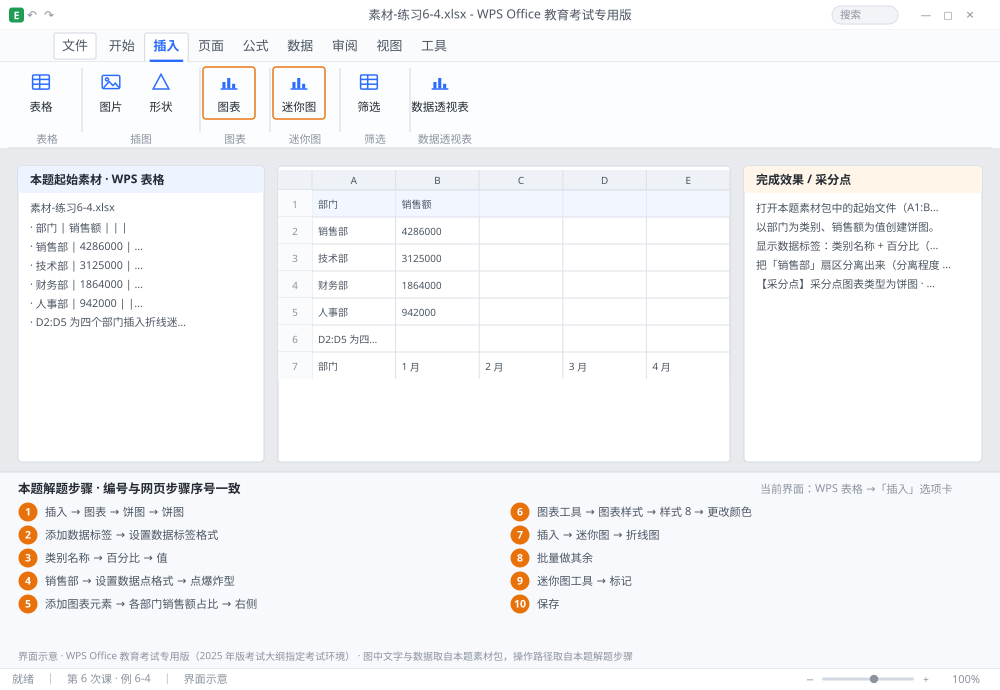

完成比对文档 · 例 6-4
饼图：类别+百分比、分离扇区、图表样式 + 迷你图 ｜ 第 6 次课 / WPS 表格 ｜ 网页：实操-表格3.html ｜ 考试环境：WPS Office 教育考试专用版（2025 年版考试大纲指定考试环境）
用途 本页按修订后的题目要求与解题步骤生成，是交卷自查的结果基准：
逐项列出每一步应出现的可复核结果，配合模拟操作截图与解题结果文件使用。
它不是素材包的一部分，不会预置答案动作；起始素材仍从本题素材包下载。
一、本题起始素材包
目录：练习素材/练习6-4-饼图与迷你图/ ｜
下载包：练习素材/下载/练习6-4-饼图与迷你图.zip
二、题目要求
- 打开本题素材包中的起始文件（A1:B5：部门、销售额，4 个部门）。
- 以部门为类别、销售额为值创建饼图。
- 显示数据标签：类别名称 + 百分比（1 位小数），不显示值。
- 把「销售部」扇区分离出来（分离程度 10%）。
- 图表标题「各部门销售额占比」，图例放在右侧，应用一种图表样式。
- 在 D2:D5 为四个部门插入折线迷你图（数据取自 1~6 月的 B~G 列）。
- 保存为 学号-姓名-练习6-4.xlsx。
三、解题步骤（编号与下方核对表、截图编号一致）
- 选数据。选中 A1:B5 →「插入」→「图表」→「饼图」→ 选「饼图」→ 确定。
- 加标签。右键饼图 →「添加数据标签」→ 再右键标签 →「设置数据标签格式」。
- 勾选项。在右侧面板勾选「类别名称」与「百分比」，取消「值」→ 百分比的小数位数设为 1。
- 分离扇区。单击选中整个饼图 → 再单击「销售部」那一块（只选中该扇区）→ 向右拖动一点；或在「设置数据点格式」里把「点爆炸型」设为 10%。分离程度用数值设置才准，拖动只能估。
- 标题与图例。「添加图表元素」→ 图表标题 → 输入「各部门销售额占比」；图例 →「右侧」。
- 换样式。「图表工具」→「图表样式」→ 选一种配色（如「样式 8」）；也可「更改颜色」选配色方案。
- 迷你图。选中 D2 →「插入」→「迷你图」→「折线图」→ 数据范围选 B2:G2 → 位置范围 $D$2 → 确定。
- 批量做其余。选中 D2 拖填充柄到 D5，迷你图会按行自动延伸（每一行取自己那一行的 6 个月）。
- 标记点。「迷你图工具」→ 勾选「标记」→ 可显示最高点/最低点，便于看出峰谷。
- 保存。Ctrl+S。
四、完成效果 / 采分点
采分点图表类型为饼图 · 数据标签含类别名称与百分比（1 位小数）且不显示值 · 销售部扇区已分离 · 标题与图例位置正确 · 已应用图表样式 · D2:D5 迷你图为折线且按行取数
五、逐项完成核对表
| 步骤 | 关键操作路径 | 应出现的结果（可复核） |
|---|
| 1 | 选数据 | A1:B5、「插入」、「图表」、「饼图」 |
| 2 | 加标签 | 「添加数据标签」、「设置数据标签格式」 |
| 3 | 勾选项 | 「类别名称」、「百分比」、「值」 |
| 4 | 分离扇区 | 「销售部」、「设置数据点格式」、「点爆炸型」、10% |
| 5 | 标题与图例 | 「添加图表元素」、「各部门销售额占比」、「右侧」 |
| 6 | 换样式 | 「图表工具」、「图表样式」、「样式 8」、「更改颜色」 |
| 7 | 迷你图 | D2、「插入」、「迷你图」、「折线图」、B2:G2 |
| 8 | 批量做其余 | D2、D5 |
| 9 | 标记点 | 「迷你图工具」、「标记」 |
| 10 | 保存 | 保存 |
六、模拟操作截图

界面示意 · WPS Office 教育考试专用版 · 橙色编号与本题解题步骤序号一致；
图中文字与数据取自本题素材包，功能入口取自本题解题步骤。
核对方法：按网页解题步骤完成并另存自己的成稿后，逐行比对本表第 3 列的
参数、公式、区域、文件名与对象数量；再对照网页「完成效果 / 采分点」检查版式是否一致。